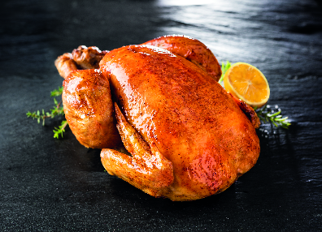

Poulet rôti aux herbes de Provence
Difficulté :
Facile
Ingrédients :
- 1 poulet entier (environ 1.5 kg)
- 3 cuillères à soupe d'huile d'olive
- 1 cuillère à soupe d'herbes de Provence
- 1 citron
- 2 gousses d'ail
- 1 branche de romarin
- Sel et poivre
- 1 oignon (facultatif)
- 1 carotte (facultatif)
Préparation :
- Préchauffer le four à 200°C (thermostat 6-7).
- Dans un petit bol, mélanger l'huile d'olive, les herbes de Provence, le sel, le poivre et le jus du citron.
- Peler et hacher finement l'ail, puis ajouter l'ail à la marinade.
- Enduire généreusement le poulet de cette marinade, en veillant à bien en mettre sous la peau et à l'intérieur.
- Placer la branche de romarin à l'intérieur du poulet et, si désiré, ajouter une demi-carotte et un oignon coupé en quartiers autour du poulet.
- Faire rôtir le poulet au four pendant environ 1h30, en l'arrosant toutes les 30 minutes avec le jus de cuisson.
- Lorsque le poulet est bien doré et cuit à cœur, sortir du four et laisser reposer 10 minutes avant de le découper.

Informations Nutritionnelles :
Portion : 4 personnes
- Calories : 350
- Protéines : 30 g
- Glucides : 5 g
- Lipides : 25 g
- Fibres : 2 g
Noter la recette :
★
★
★
★
★